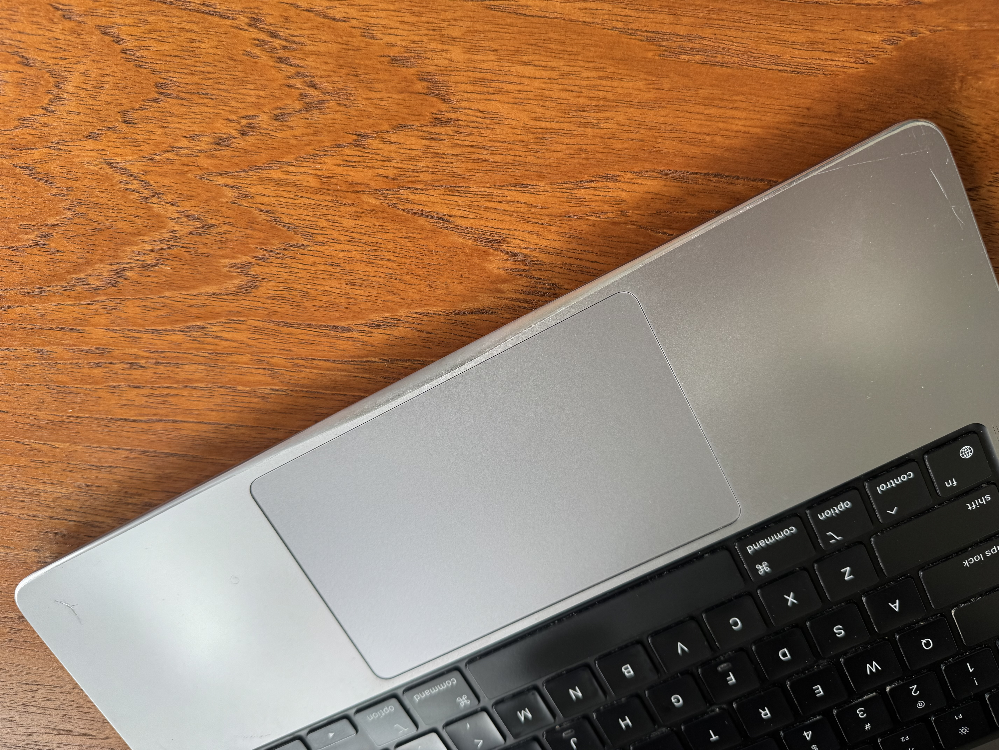
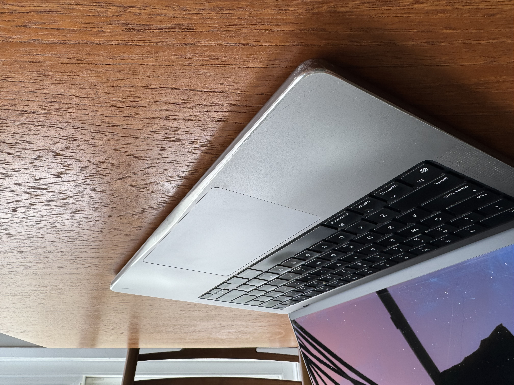
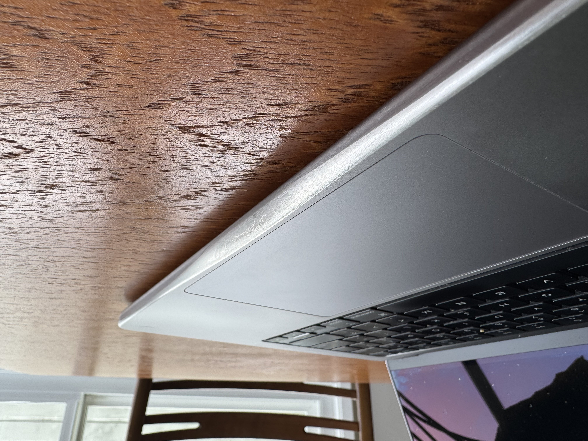
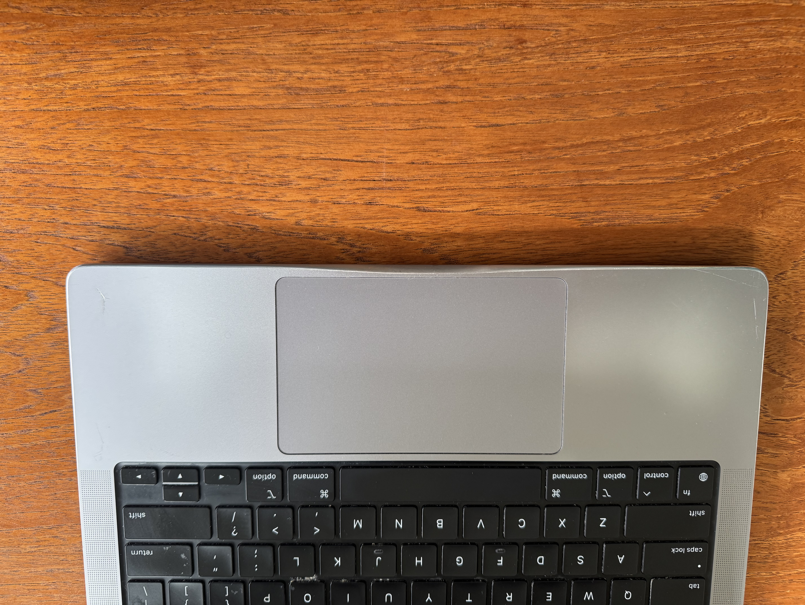
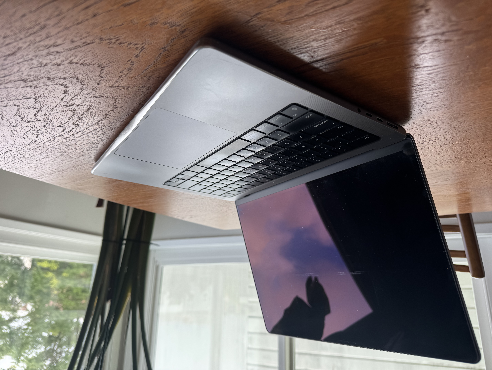

On filing the corners off my MacBooks
April 2026
I file the sharp corners off my MacBooks. People like to freak out about this, so I wanted to post it here to make sure that everyone who wants to freak out about it gets the opportunity to do so.
Here are some photos so you know what I'm talking about:





The bottom edge of the MacBook is very sharp. Indeed, the industrial designers at Apple chose an aluminum unibody partly for the fact that it can handle such a geometry. But, it is uncomfortable on my wrists, and I believe strongly in customizing our tools, so I filed it off.
The corner is sharp all around the machine, but it's particularly pointed at the notch, which is where I focused my effort. It was quite pleasing to blend the smaller radius curves into the larger radius notch curve. I was slightly concerned that I'd file through the machine, so I did this in increments. It didn't end up being an issue.
I taped off the speakers and keyboard while filing, as I'm sure aluminum dust wouldn't do the machine any favors. I also clamped (with a respectful pressure) the machine to my workbench while doing this. I used a fairly rough file, as that is what I had on hand, and then sanded with 150 then 400 grit sandpaper. I was quite pleased with the finish. The photos above are taken months after, and have the scratches and dings that you'd expect someone who has this level of respect for their machine to acquire over that amount of time.
This was on my work computer. I expect to similarly modify future work computers, and I would be happy to help you modify yours if you need a little encouragement. Don't be scared. Fuck around a bit.